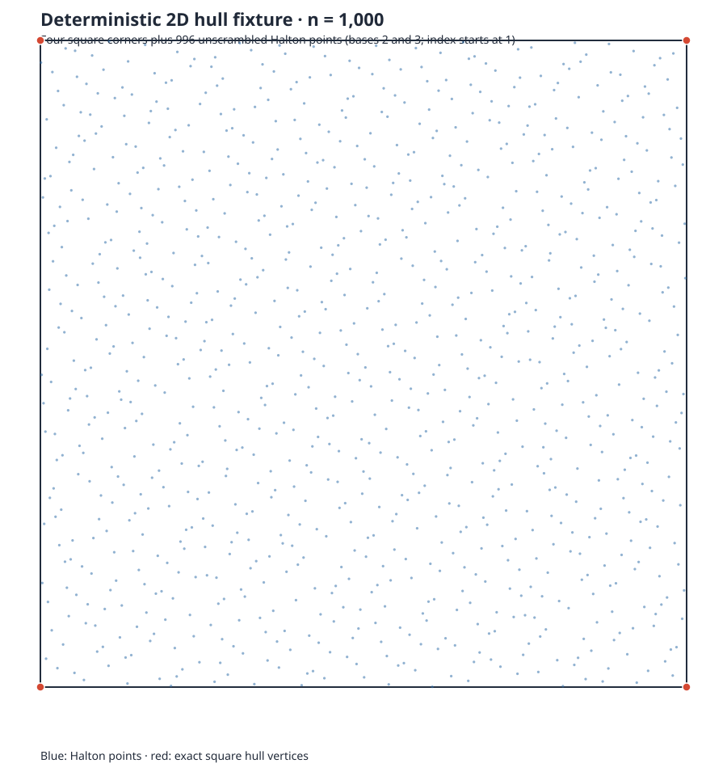

Read the methodology and reproduction details
Earlier Halton square size ladder
This is a separate exploratory run from source commit 5ee632d105f134fbcba3a4f50334eef8e97476ab. It uses 250, 1,000, and 5,000-point unscrambled Halton square inputs, one warmup and seven interleaved measured attempts per method and size. It is not pooled with the newer dyadic fixtures in the parent report.
QuickHull and basis reuse passed all 21 measured attempts. The other four reducers failed completion checks across this ladder; their elapsed times are diagnostic only. The original 5,000-point run exceeded its first 300-second cap and continued from round 4. This run had no per-attempt resource limiter, and no overall winner or scalability claim is made.

Per-method results
Times are milliseconds. Blank medians indicate that no attempt passed validation.
| Points | Method | Valid | Trials | Median valid ms | Min | Max | Failed |
|---|---|---|---|---|---|---|---|
| 250 | geometric-quickhull | 7 | 7 | 0.556081 | 0.538969 | 0.745562 | 0 |
| 250 | lp-membership-baseline | 0 | 7 | 7 | |||
| 250 | basis-reuse-related-to-A43 | 7 | 7 | 2.56096 | 2.531695 | 2.604611 | 0 |
| 250 | ordered-membership-related-to-A44 | 0 | 7 | 7 | |||
| 250 | A43-certificate-safe-basis-adaptation | 0 | 7 | 7 | |||
| 250 | A44-incremental-LP-paper-adaptation | 0 | 7 | 7 | |||
| 1000 | geometric-quickhull | 7 | 7 | 2.218455 | 2.215312 | 2.564382 | 0 |
| 1000 | lp-membership-baseline | 0 | 7 | 7 | |||
| 1000 | basis-reuse-related-to-A43 | 7 | 7 | 9.435769 | 9.384155 | 11.978499 | 0 |
| 1000 | ordered-membership-related-to-A44 | 0 | 7 | 7 | |||
| 1000 | A43-certificate-safe-basis-adaptation | 0 | 7 | 7 | |||
| 1000 | A44-incremental-LP-paper-adaptation | 0 | 7 | 7 | |||
| 5000 | geometric-quickhull | 7 | 7 | 11.105551 | 11.042414 | 13.153451 | 0 |
| 5000 | lp-membership-baseline | 0 | 7 | 7 | |||
| 5000 | basis-reuse-related-to-A43 | 7 | 7 | 48.572555 | 48.245906 | 54.473832 | 0 |
| 5000 | ordered-membership-related-to-A44 | 0 | 7 | 7 | |||
| 5000 | A43-certificate-safe-basis-adaptation | 0 | 7 | 7 | |||
| 5000 | A44-incremental-LP-paper-adaptation | 0 | 7 | 7 |
Saved evidence
- Summary CSV
- Validated rows
- Coverage and input hashes
- Methodology, limitations, and reproduction
- 250-point raw attempts
- 1,000-point raw attempts
- 5,000-point initial run (26 rows; exit 124)
- 5,000-point continuation (24 rows; includes 2 repeated keys)
Source and timing scope differ from the 2026-10-27 dyadic pilot. See each report's own environment, raw records, and checksums.